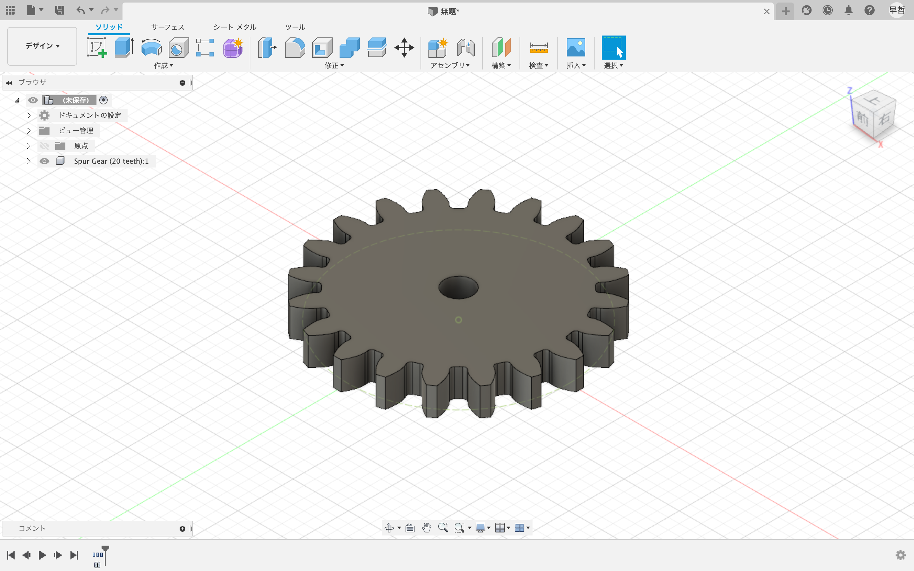
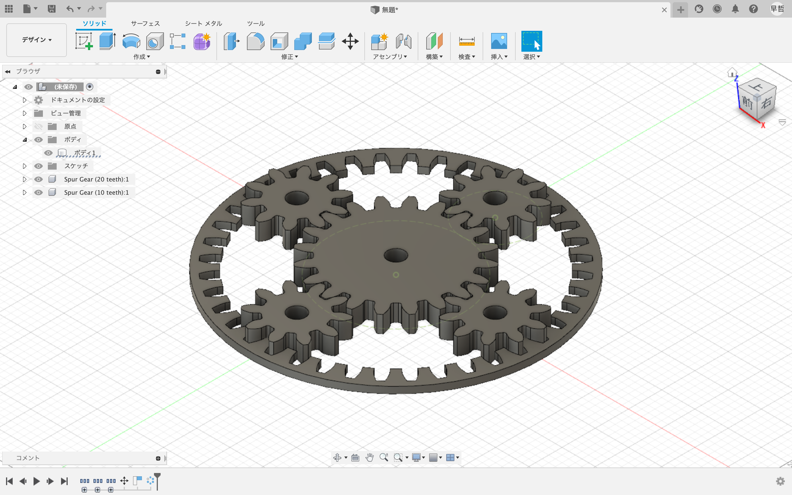
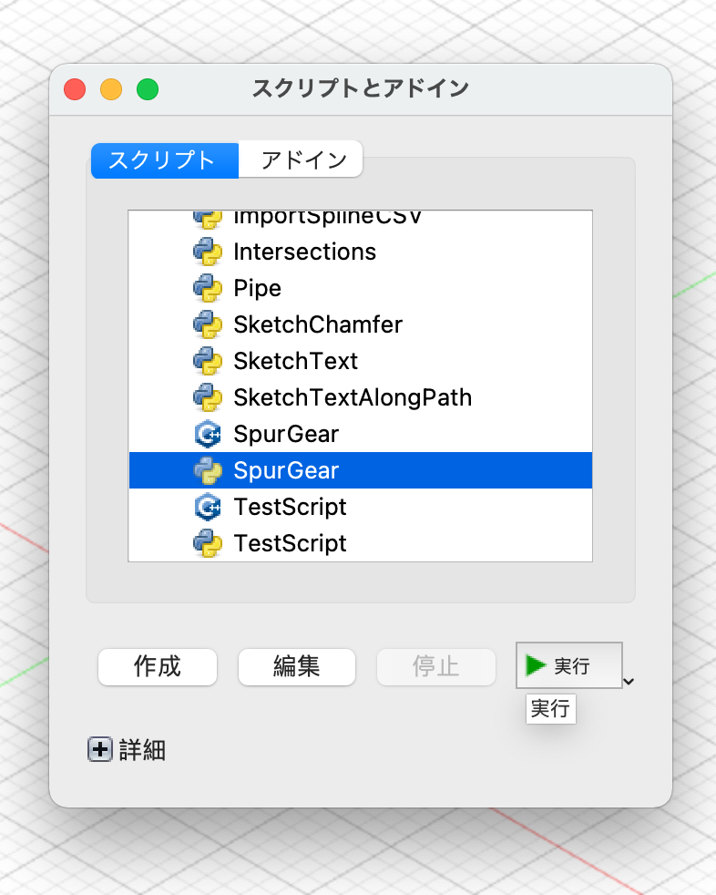
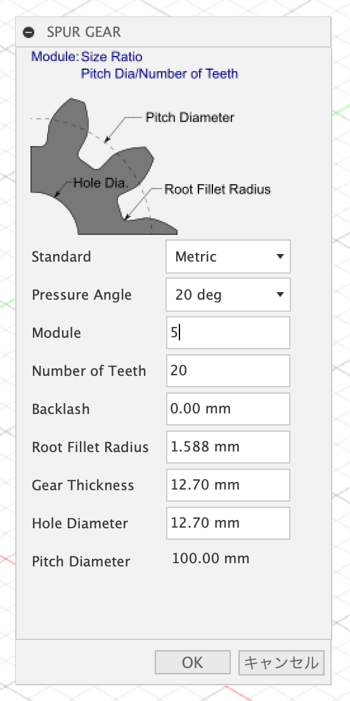
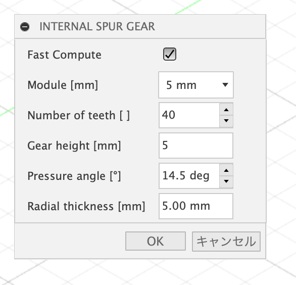
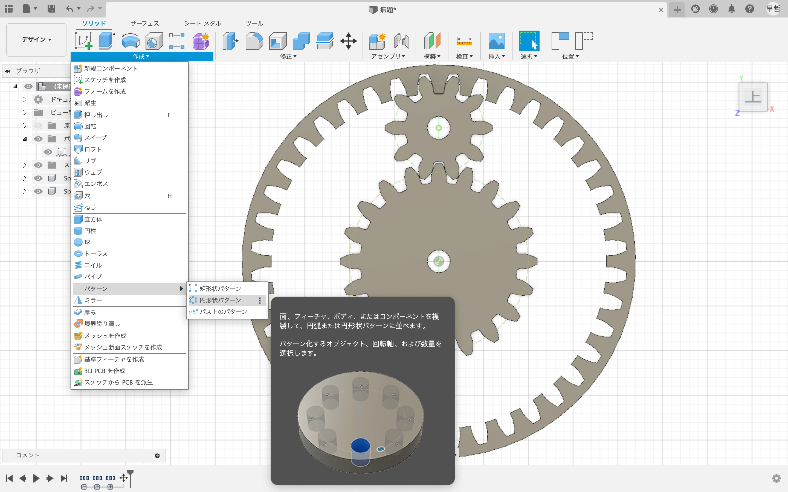

fusion360での歯車の挿入
歯車を挿入することで簡単に多様な歯車が作れます


平歯車

shift+sキーでスクリプトとアドインのなかの「SpurGear」を選択

okをクリックすれば完成
内歯車と平歯車
まず前提としてfusion360のapp storeで「GF GEAR GENERATER」をインストールしておく

「GF GEAR GENERATER」の「INTERNAL SUPUR GEAR」でモジュール=5、歯数40の内歯車を作成
平歯車はそれぞれモジュール５と歯数20、モジュール5と歯数10のものを作成

円形状パターンで小さい方の平歯車を増やす